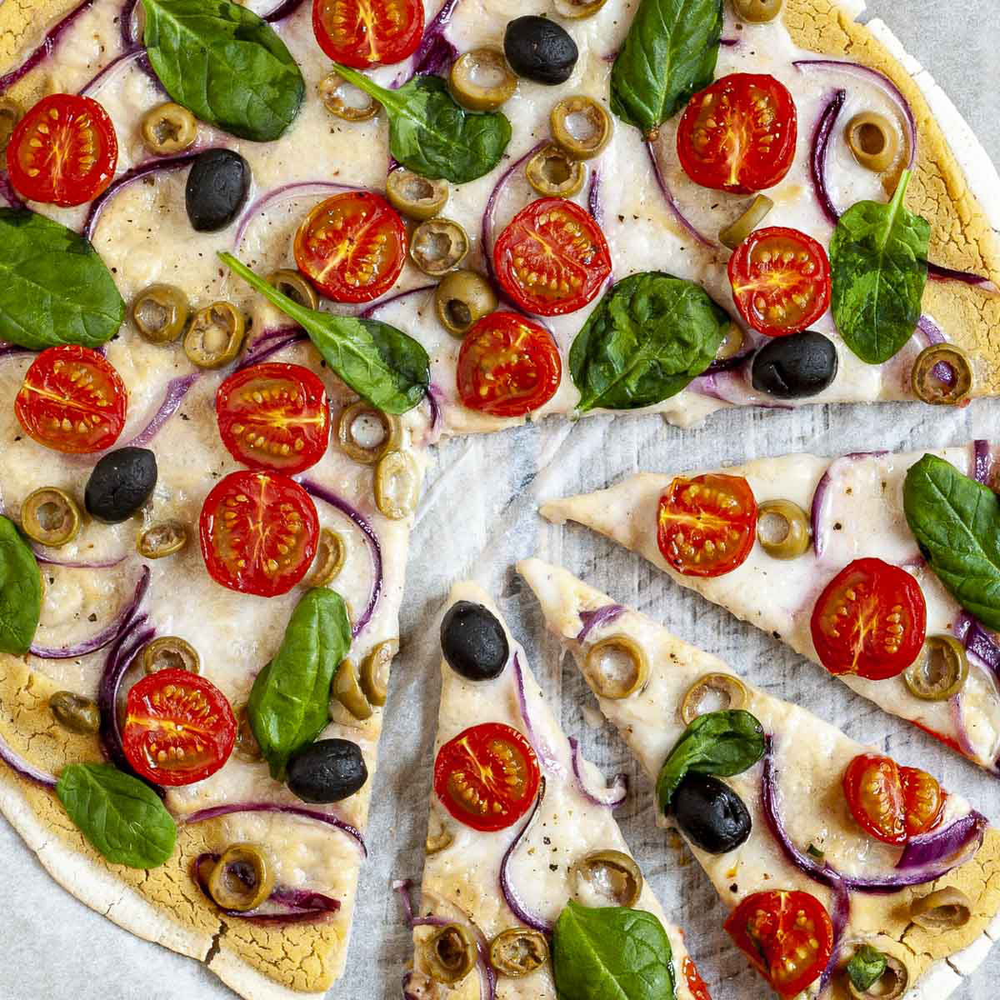

Hummus Pizza

Description
Hummus pizza borrows heavily from the Italian pizza. It consists of round, flat base of leavened wheat-based dough topped with favorite veggies, and cheese baked at a high temperature. It uses hummus instead of the usual red sauce to give it a unique appearance for those bored with the traditional dish.
Hummus pizza is common in almost every part of the world. However, it is heavily consumed in Norway, the U.S, U.K, Germany, France, and Australia.
Ingredients
- 10 ounce can refrigerated pizza crust dough
- 4 chopped tomatoes
- 1 cup hummus spread
- 1 ½ cups sliced bell peppers, any color
- 1 cup broccoli florets
- 2 cups shredded Monterey Jack cheese
Steps
- Preheat the oven to 220 degrees C
- Roll out pizza crust and place on a pizza pan or baking sheet
- Spread a thin layer of hummus over the crust
- Arrange sliced peppers and broccoli over the hummus, and top with shredded cheese
- Bake in the preheated oven until the crust is golden brown and cheese is melted in the center, 10 to 15 minutes
- Add tomato slices
- Slice and serve